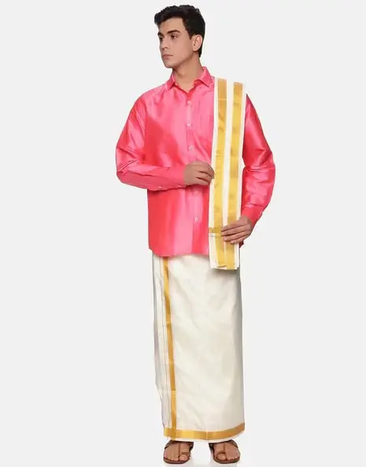

Angavastram
The Angavastram, a type of stole, goes with the Panche to complete the traditional look. It is usually worn across the shoulders, mostly made from the same material as the Panche. It is normally draped on one shoulder or across the neck. An Angavastram sure adds some form of seriousness and class to the dressing.